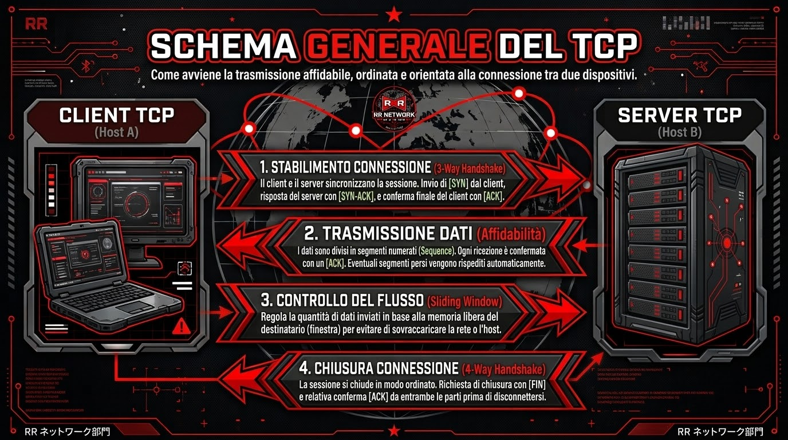
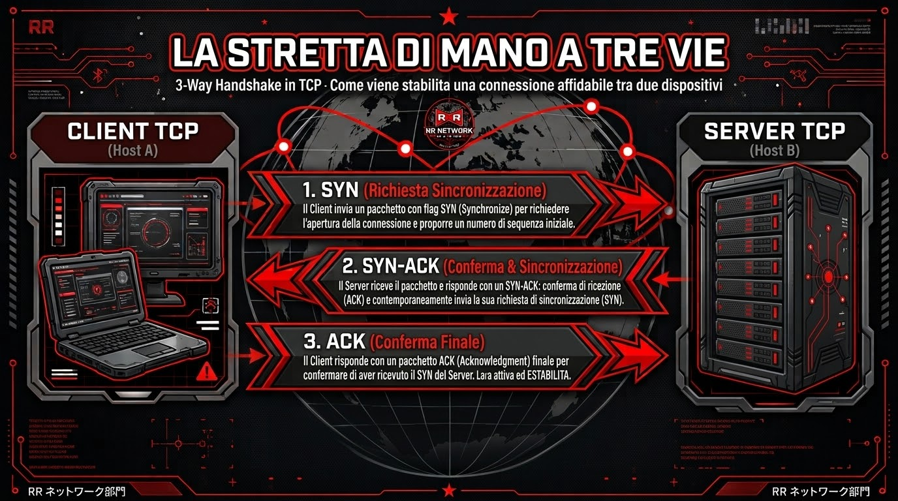
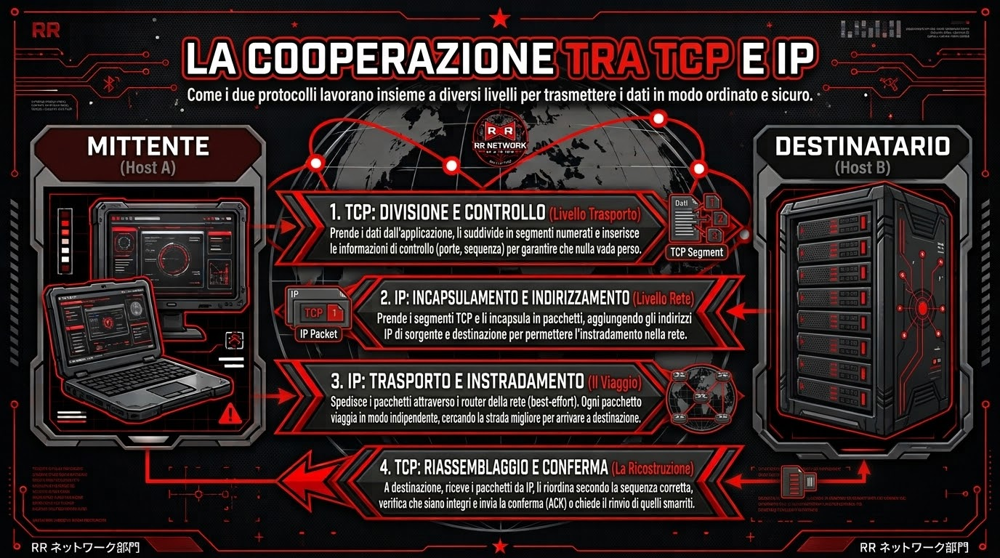
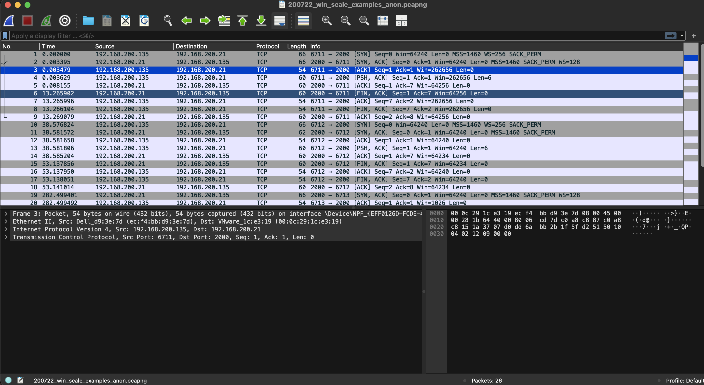

Il Transmission Control Protocol (TCP) è il vero e proprio motore su cui si regge la comunicazione moderna. Ogni volta che navighiamo su un sito web, inviamo un'email o scarichiamo un file di grandi dimensioni, c'è il TCP che lavora dietro le quinte. Nato negli anni Settanta grazie al lavoro pionieristico di Vinton Cerf e Robert Kahn (e formalizzato nel 1981 con la celebre RFC 793), questo protocollo è stato costantemente aggiornato per supportare l'esplosione di Internet. Il suo scopo principale è uno solo ma fondamentale: garantire che i dati inviati arrivino a destinazione in modo corretto, esattamente nell'ordine previsto e senza perdere per strada neanche un singolo pezzo.

A differenza di protocolli più sbrigativi (come l'UDP), il TCP è rigorosamente orientato alla connessione. Questo significa che, prima di scambiarsi anche un solo dato utile, i due computer devono presentarsi e mettersi d'accordo tramite una procedura chiamata Three-Way Handshake, ovvero una stretta di mano in tre passaggi. Funziona così: il dispositivo che vuole comunicare invia un messaggio iniziale di saluto (SYN); il destinatario risponde confermando la sua totale disponibilità (SYN-ACK); infine, il primo dispositivo manda un'ultima conferma (ACK) chiudendo i convenevoli. Da questo momento, il canale è ufficialmente aperto.
Solo a questo punto le informazioni vere e proprie (che sia una fotografia o un lungo documento) vengono frammentate in piccoli blocchi chiamati segmenti. Ogni segmento riceve un "numero di sequenza" univoco, in modo che chi lo riceve sappia esattamente in che ordine rimontare il puzzle, anche se i pezzi arrivano sparpagliati.

Cosa succede se c'è traffico sulla rete e un pacchetto viene perso? Il TCP non lascia nulla al caso. Per assicurare l'affidabilità assoluta, utilizza un sistema di ricevute di ritorno: i messaggi di Acknowledgment (ACK). Ogni volta che il destinatario riceve correttamente un pezzo del file, avvisa il mittente. Se il mittente non riceve questa conferma entro un certo tempo, capisce che qualcosa è andato storto e ritrasmette automaticamente le informazioni mancanti.
A questo si aggiungono due meccanismi estremamente intelligenti. Il controllo del flusso impedisce a un computer molto veloce di "ingozzare" di dati un dispositivo più lento, adattando la velocità di invio alla capacità di ricezione dell'altro. Il controllo della congestione, invece, guarda allo stato di salute dell'intera rete: se ci sono ingorghi, il TCP riduce spontaneamente la quantità di dati trasmessi contemporaneamente per evitare rallentamenti a catena, rendendo la comunicazione incredibilmente stabile.

Tutta questa precisione non servirebbe a molto senza il perfetto lavoro di squadra con l'Internet Protocol (IP). I due protocolli svolgono compiti separati ma totalmente complementari. L'IP fa la parte del postino: si preoccupa esclusivamente dell'indirizzamento e di trovare la strada più breve tra i router per recapitare i pacchetti a destinazione. Il TCP, invece, fa da supervisore: non gli importa da quale strada siano passati i dati, lui si assicura solo che il contenuto arrivi integro, che nessuno dei pacchetti si sia rovinato durante il viaggio e che il file finale venga ricostruito alla perfezione.
Analizzando il traffico TCP, è possibile osservare l'avvio della connessione tra client e server tramite il Three-way handshake. I primi tre pacchetti catturati mostrano l'essenziale scambio dei flag [SYN], [SYN, ACK] e [ACK]. Questa procedura garantisce l'instaurazione di un canale di comunicazione affidabile e orientato alla connessione prima dell'effettivo trasferimento dei dati (evidenziato dai successivi flag [PSH, ACK]).
